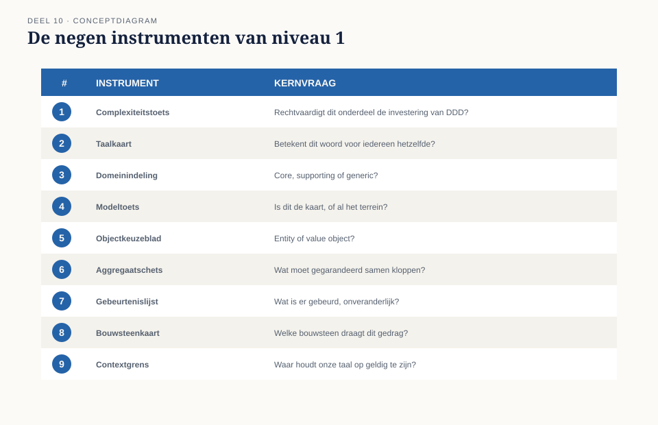
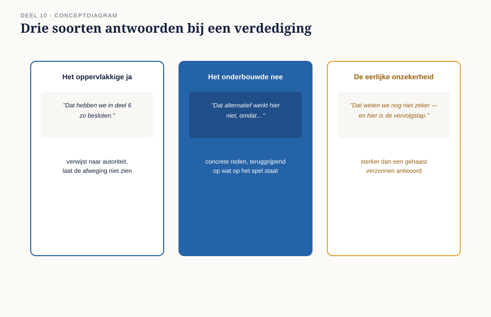

Deel 10 — Examentraining iSAQB-module (tactisch deel) + capstone: verdedig het Nabestaandenloket-model
Slidedeck · Ductus-cursus Domain-Driven Design · niveau 1 · deel 10 van 30 · 26 slides — afsluiting van niveau 1
Slide 1 — Titel
Domain-Driven Design — deel 10 Examentraining + capstone: verdedig het Nabestaandenloket-model Niveau 1: fundament, afsluiting · voorbereiding op de iSAQB Advanced-module DDD
Slide 2 — Terugblik niveau 1
Negen delen, negen instrumenten: van complexiteitstoets tot contextgrens. Vandaag: geen nieuwe theorie.
Slide 3 — Wat dit deel wél doet
Deel A — oefen de examenvorm van de iSAQB-module. Deel B — verdedig het complete model.
Slide 4 — De uitnodiging
Corné vraagt om een presentatie. Niet omdat hij twijfelt — omdat het team moet leren wat er straks sowieso gaat gebeuren.
Slide 5 — Wie er meekijken
Rutger — kritische collega Saïda — compliance Een extern klankbord — kent de casus niet
Slide 6 — Willemijns adagium
“Niet het antwoord kennen — beargumenteren waarom het antwoord het antwoord is.” — Willemijn Brugman
Slide 7 — Deel A: de tactische module-toets
Een scenario. Een begrip. Een onderbouwing. Eigen vragenbank — geen echte examenvragen.
Slide 8 — Wat een goed antwoord heeft
Niet alleen het juiste woord — ook waarom een net iets ander antwoord fout zou zijn geweest.
Slide 9 — Voorbeeldvraag
Een boekingssysteem behandelt twee identieke boekingen als twee aparte, tegelijk geldige boekingen. Entity of value object?
Slide 10 — Voorbeeldantwoord
Entity — niet omdat de gegevens verschillen, maar omdat het systeem ze afzonderlijk moet kunnen volgen.
Slide 11 —

De negen instrumenten van niveau 1, elk met zijn kernvraag — als opfrisser
Slide 12 — Deel B: de capstone
Het eigen model verdedigen — tegen mensen die er niet bij waren.
Slide 13 — Waarom dit moeilijker is
Een scenario beantwoorden test of je een begrip kunt toepassen. Je eigen model verdedigen test of je de samenhang vasthoudt.
Slide 14 — Drie soorten antwoorden
Het oppervlakkige ja. Het onderbouwde nee. De eerlijke onzekerheid.
Slide 15 —

Drie kolommen, drie herkenbare voorbeelduitspraken
Slide 16 — Het oppervlakkige ja
“Dat hebben we in deel 6 zo besloten” — zonder de afweging opnieuw zichtbaar te maken.
Slide 17 — Het onderbouwde nee
Een alternatief benoemen, en uitleggen waarom het hier bewust niet is gekozen.
Slide 18 — De eerlijke onzekerheid
“Dat weten we nog niet zeker — en hier is waarom dat oké is voor nu.” Sterker dan een verzonnen antwoord.
Slide 19 — Ronde 1: taal en grenzen
Waarom “dossier” en niet “zaak”? Wat zou er misgaan bij een ander woord?
Slide 20 — Ronde 2: bouwstenen
Leg in twee minuten uit waarom een overlijdensmelding een domain event is — aan iemand die de casus niet kent.
Slide 21 — Ronde 3: de grens onder druk
Een klacht na een jaar. Kun je de beslissing navertellen zonder giswerk?
Slide 22 — Daans antwoord
“Saïda had ons nodig te laten zien dat we, ook een jaar later, kunnen navertellen wanneer welk feit precies bekend werd.” — Daan Kuiper
Slide 23 — Corné’s slotwoord
“Ze hebben laten zien dat ze niet alleen weten wát ze hebben gebouwd, maar ook waaróm — en waar ze het nog niet zeker weten.” — Corné Pauwels
Slide 24 — Niveau 1 afgerond
Het Nabestaandenloket is niet gebouwd — wel doordacht: in taal, in grenzen, in bouwstenen. En één keer verdedigd.
Slide 25 — Wat er nog open ligt
Documentbeheer, adresverificatie — generiek, maar hier niet verder uitgewerkt. De relatie met UWV en polisadministratie — nog geen context-mappingpatroon toegewezen.
Slide 26 — Naar niveau 2
Van één dossier naar het hele landschap: KERN, Werkgeversportaal, Mutatieplatform, Nabestaandenloket, Wegwijzer. Daan wordt domeinmodelleur van het Programma Mutatieplatform.